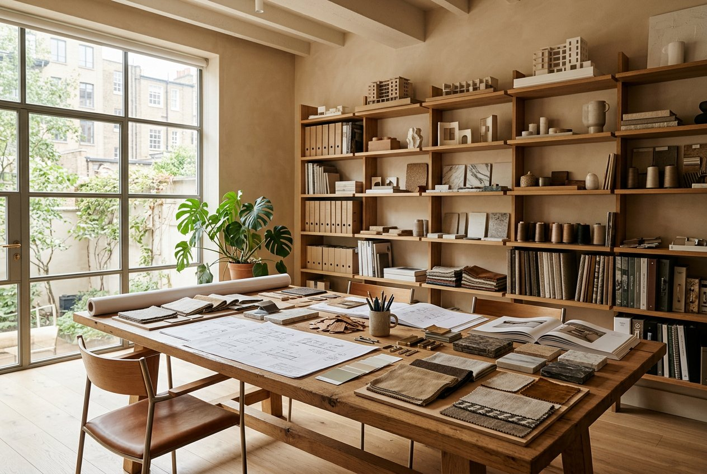
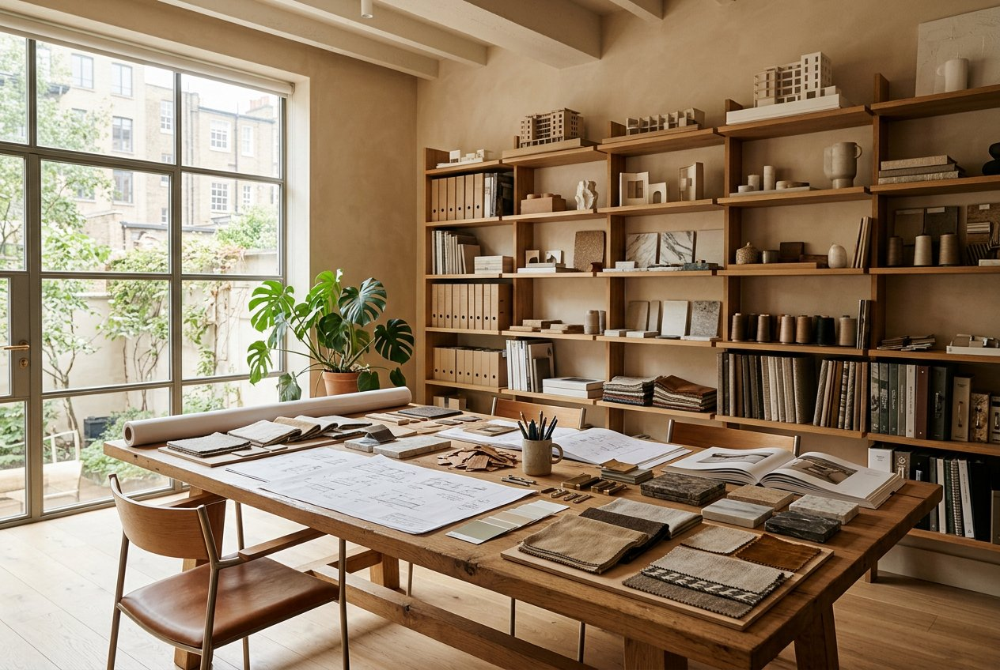
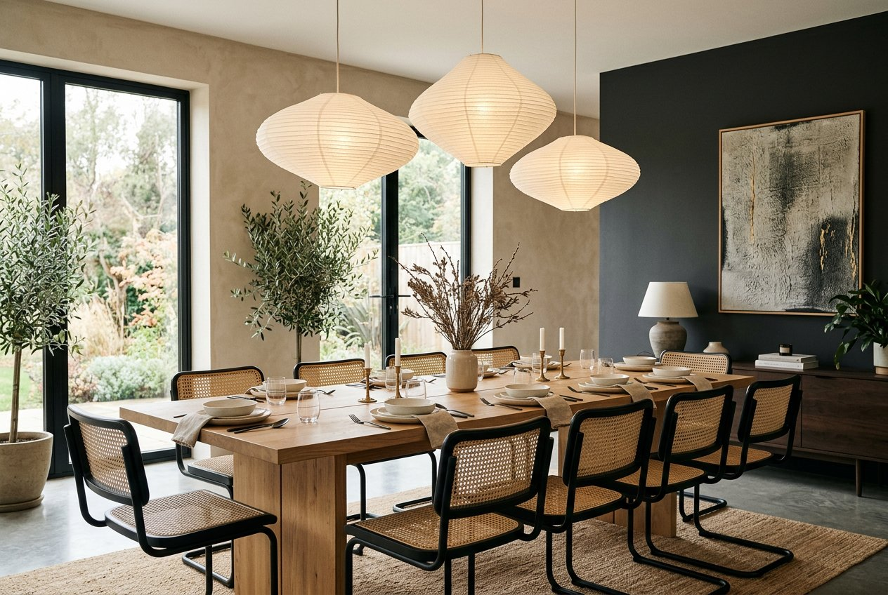

Ahmed Raza
Founder & Lead Designer
The studio
We are designers, project managers and cabinetmakers in one team — which is why our rooms finish the way they were drawn.


Since 2011
Woodex began as a two-bench joinery workshop in Lahore. Today a studio of architects, designers and makers delivers homes, workplaces, cafés and stores across Pakistan — with the workshop still at the heart of everything.
We keep the team small on purpose: one lead designer owns your project, one project manager owns your schedule, and one workshop builds your joinery. Nobody hands your home to a subcontractor chain.
The people
Founder & Lead Designer
Design Director
Joinery Workshop Lead
Senior Project Manager
3D & Visualisation Lead
Client Relations
How we're different
The number you approve is the number you pay. Changes only happen with your signature — priced before, never after.
Every project gets a dated schedule in week one, plus weekly photo reports from site. You always know where things stand.
Our own makers, our own benches, our signature inside every piece — covered for ten years, parts and labour.




The process
We walk your space, listen to how you live or work, and agree scope, budget range and timing.
1–2 weeksMoodboards, layout options and material palettes — two clear directions, never ten half-ideas.
2–3 weeksDrawings, 3D views, joinery details and a fixed quotation before work starts.
3–4 weeksOur workshop fabricates while the site team prepares services, surfaces and fittings.
6–12 weeksWhite-glove installation, room-by-room snagging and a signed handover with warranty documents.
1–2 weeksWorking with us
We visit your space or video-call, listen to how you use it, and talk budget openly. Within two working days you receive a summary with scope options and honest price ranges — free of charge.
Typically 30% to begin design, 40% on design approval and materials order, and 30% on handover. Large fit-outs are milestone-based. Everything is invoiced, receipted and documented.
Yes — society approvals, MEP engineers, licensed contractors and site safety all sit under our project management. One point of contact, one responsible contract.
Happily. We collaborate with architects and structural engineers regularly, and can build directly from existing drawing sets after a coordination review.
Meet the studio
Studio visits in Lahore are by appointment — ninety minutes, tea included, no obligation.
Book a studio visit